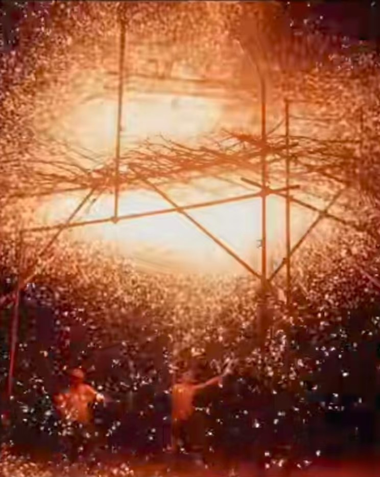

打铁花，是流传于豫晋地区的民间传统烟火，国家级非物质文化遗产之一。
确山打铁花是河南省仅存的大型汉族民间传统焰火，在2006年入选河南省省级非物质文化遗产名录；
2008年6月，河南省确山县申报的打铁花经国务院批准列入第二批国家级非物质文化遗产名录，遗产编号Ⅹ-88。
打铁花是中国古代匠师们在铸造器皿过程中发现的一种民俗文化表演技艺，始于北宋，盛于明清，至今已有千余年历史。

打铁花：传承千年的技艺，震撼你的视听！
带你去看曾经最极致的浪漫，千年绝技—打铁花
散落人间的火树银花 “打铁花”惊艳亮相震撼全场

杨建军
确山县非遗打铁花传承人
江寻千
国风少女传承千年绝技打铁花表演前，要在一个宽阔的广场中间搭起一个丈余高的二层八角大棚,第一层4米高,第二层1.5米高，称为“花棚”，花棚顶上铺一层新鲜的柳树枝，树枝上绑满各种烟花、鞭炮、起火等。


